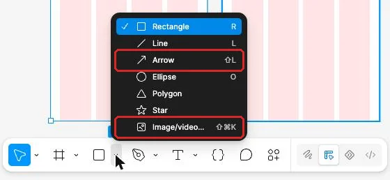
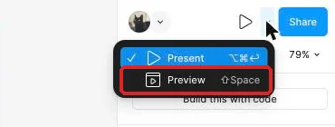

把需求變成流程與線框
工作室主管提出一串模糊又過多的期待，這堂先整理真正要解決的問題，再把必做範圍畫成流程與線框。
從做好的畫面回到真正的需求
工作室行政人員每天打開手機，先登入，再從待處理清單找到「整理交付包」。前面已經完成登入、清單、詳情、確認彈窗與完成清單；現在要暫時把視線從畫面細節拉回來，確認這些畫面是否真的回應主管與行政人員的問題。
你會用到先前做好的五張畫面。先打開本堂起始材料，對照工作情境與既有名稱；完成後再用本堂完成檢查表逐項確認。若手上沒有前一次成果，先打開設計回饋、彈窗與導覽，依該頁規格表補出必要畫面，約需二十到三十分鐘。
這堂會先讀一段主管訪談，把想法分成必做與之後再做，再從必做內容推出畫面清單。接著把畫面關係畫成流程圖，最後才回到原有線框與正式 Prototype（原型）起點。這個順序能讓每一張畫面都有需求理由，而非看到功能就立刻多畫一頁。
先聽懂問題，再決定要畫什麼
需求訪談不會直接送來一張整齊的功能清單。主管可能先說最急的是「快速完成任務」，過一會兒又想到聊天、報表與排班；也可能把解決方法當成需求，例如一開始就指定要做五個分頁。設計工作要先找出誰遇到什麼問題，再判斷哪些內容足以支持眼前目標。
以下是設計師與工作室主管的第一次訪談。閱讀時先圈出使用者、發生情境、主要困難、成功樣貌與限制；功能名稱先留在原句旁，稍後再決定範圍。
| 說話者 | 內容 |
|---|---|
| 設計師 | 目前工作室怎麼分配每天要處理的工作？最常卡在哪裡？ |
| 主管 | 我早上把事情貼在群組，大家往上找自己要做什麼。訊息一多就被洗掉，最後還是來問我。 |
| 設計師 | 哪些人會用？通常在什麼裝置、什麼情況下查看？ |
| 主管 | 工作室成員都要看。有人剛到客戶現場，只拿手機；也有人整天坐在電腦前。我最在意手機能快速找到待處理工作。 |
| 設計師 | 一筆工作最少要看到哪些內容，才有辦法開始？ |
| 主管 | 標題、說明、期限、現在是不是完成。最好也有負責人、客戶資料、附件、留言、工時和優先順序，全部都放進去比較完整。 |
| 設計師 | 如果先做最急的一段，成員要完成哪個動作？ |
| 主管 | 登入後看到待處理清單，點一筆看詳情，確認內容後標記完成。標錯時最好能先確認，完成的也要找得到。 |
| 設計師 | 哪種失敗最需要先處理？ |
| 主管 | 登入失敗卻不知道原因最麻煩。至少要說資料不正確，讓人回去改。工作標記完成失敗也要有提示，不能看起來像成功。 |
| 設計師 | 你剛提到很多資料，第一版都已經整理好了嗎？ |
| 主管 | 標題、說明和期限有，完成狀態也有。負責人有時只寫暱稱，附件散在雲端，工時還沒開始記。那些資料之後再整理也可以。 |
| 設計師 | 還希望第一版加入哪些功能？ |
| 主管 | 最好有團隊聊天、每週報表、行事曆、排班、通知、搜尋和客戶簽核。我知道有點多，但做成 App 就希望一次解決。 |
| 設計師 | 有哪些時間或維護限制？ |
| 主管 | 先用現有資料做出可以操作的版本，這個月要確認流程。之後主要由行政人員維護，所以名稱和操作要一看就懂。 |
| 設計師 | 怎樣算這次有解決問題？ |
| 主管 | 成員能在手機上自己找到待處理工作，看完內容後完成，不再回群組問我「現在要做哪一件」。 |
訪談裡同時有問題、想法與尚未具備的資料。若把主管提到的每個名詞都畫成畫面，設計會快速膨脹，卻不一定讓成員更快完成工作。這就是範圍整理的第一個判斷：需求是為特定使用者與目標選出的必要內容，主管說過的功能只是素材。
把訪談整理成一頁需求摘要
有了原始訪談，下一步是把散落資訊壓縮成可用的決策。需求摘要保留主管的原意，把原句分到目標、使用者與情境、範圍、限制四個位置，讓後續每張畫面都能回答「為什麼現在要做」。
| 項目 | 工作室待處理清單的整理結果 | 來自訪談的判斷 |
|---|---|---|
| 目標 | 讓工作室成員能在手機上找到待處理工作、查看內容並標記完成 | 主管最後說明的成功樣貌 |
| 使用者與情境 | 成員在工作室或客戶現場，用手機快速確認目前要處理的工作 | 手機是最急的使用情境 |
| 必做 | 登入；待處理清單；任務詳情；完成前確認；完成後可在完成清單找到 | 支持一條完整的主要任務 |
| 之後再做 | 搜尋、通知、聊天、報表、行事曆、排班、客戶簽核 | 不影響眼前流程，且部分資料尚未整理 |
| 限制 | 先用現有標題、說明、期限與狀態；本月確認流程；名稱要容易維護 | 資料、時間與維護人力有限 |
「必做／之後再做」是 MoSCoW 範圍法的精簡版本。這裡沒有把之後再做的內容丟掉，而是把它們留在清單中，避免它們搶走主要流程的時間。例如搜尋會在任務量很大時有價值，但目前先確認登入到完成的路是否成立；聊天與報表則需要額外資料與規則，適合在核心流程可用後另行定義。
目標要寫成使用者能完成的結果。「做一個任務 App」只描述產物；「成員能在手機上找到待處理工作並標記完成」才說明產品要改變的行為。限制會幫你判斷何時停止加功能，保留時間把主要路徑做完整。
從必做範圍推出畫面清單
需求摘要確認後，才把使用者要完成的動作轉成畫面。每張畫面都要有一個明確任務；同一個步驟若只需要短暫確認，可以用彈窗處理，不一定要多做完整頁面。
| 順序 | 畫面 | 使用者在這裡做什麼 | 對應的必做需求 |
|---|---|---|---|
| 1 | 登入 | 輸入帳號與密碼，進入自己的工作清單 | 辨認使用者並保護工作資料 |
| 2 | 待處理清單 | 掃讀標題與期限，選出要處理的工作 | 找到目前要做的事 |
| 3 | 任務詳情 | 讀說明與期限，判斷是否完成 | 看懂一筆工作的完整內容 |
| 4 | 確認彈窗 | 確認這次狀態改變，或取消返回 | 降低誤標完成的風險 |
| 5 | 完成清單 | 看見剛完成的工作仍可查找 | 確認結果並保留紀錄 |
畫面清單來自必做動作，而非主管提到名詞的數量。搜尋、通知與聊天都留在「之後再做」，因此這次不為它們新增畫面；附件與工時的資料也尚未整理，詳情先使用已有的說明與期限。這樣的取捨讓線框有清楚邊界，也讓主管能指出真正遺漏，而不是只在大量空白頁之間想像功能。
在同一個設計檔畫出主要路徑與錯誤分支
畫面清單只說明有哪些頁，流程圖則顯示動作如何把它們串起來。這堂把流程圖放在同一個 Figma Design 檔案，讓需求、線框與正式畫面能並排核對；團隊討論白板常用 FigJam，本課流程圖直接在設計檔裡完成，也能把 Starter 的三個可工作檔案額度留給其他用途。
| 類別 | 名稱或設定 | 本堂值 |
|---|---|---|
| 流程區 | Flow / 完成一筆任務（完成任務流程區） | Section |
| 主要節點 | 登入、待處理清單、任務詳情、確認、完成清單 | 每個畫面一個矩形 |
| 主要連線 | 登入 → 清單 → 詳情 → 確認 → 完成清單 | 箭頭旁寫觸發動作 |
| 錯誤節點 | 登入失敗提示 | 連回登入 |
| 工具 | Section、Rectangle、Arrow | 快捷鍵 ⇧S、R、⇧L |
- 在畫布空白處按 ⇧S 建立 Section，命名為
Flow / 完成一筆任務（完成任務流程區）。做完會看到一個可容納整條流程的區域。 - 在流程區放入五個矩形，依規格表寫上畫面名稱。做完會得到與必做清單一一對應的節點。
- 把五個節點由左到右排列，先保留等距空間。做完會看見主要任務的閱讀順序。
- 使用 Arrow（箭頭）工具，快捷鍵是 ⇧L，從登入連到待處理清單。做完會看到箭頭方向指向下一張畫面。

- 依序連到任務詳情、確認與完成清單。做完會形成一條不中斷的主要路徑。
- 在每條箭頭旁寫出動作，例如「登入成功」「選擇整理交付包」「標記完成」「確認完成」。做完後，流程圖會同時說明畫面與觸發原因。
- 在登入下方新增「登入失敗提示」節點，從登入拉一條箭頭過去。做完會看到主要路徑之外的錯誤結果。
- 從錯誤提示連回登入，箭頭旁寫「修正資料後重試」。做完會形成可恢復的錯誤分支。
- 從目標倒著走讀每個節點，確認每一步都能追溯到需求摘要。做完會知道哪些節點屬於必做，哪些想法仍留在之後再做。
形狀工具位於底部矩形工具旁的下拉選單，Arrow 顯示為 ⇧L；Section 則在 Frame 工具旁的下拉選單，快捷鍵是 ⇧S。流程圖的矩形只表達畫面角色，無須複製正式畫面的視覺細節。當主要路徑與錯誤分支都能用一句話走完，就可以進入線框安排資訊。
線框先回答問題，原型再回答操作
需求與流程已經收斂，現在要分清楚任務卡、線框與原型各自解決的問題。任務卡說明「誰要完成什麼」；流程圖說明「會經過哪些畫面」；線框安排「畫面上先看到什麼」；原型則讓人實際點擊，檢查「按下去會去哪裡」。
例如，行政人員的目標是完成一筆待處理任務。登入畫面需要讓人辨認帳號、密碼與登入動作，清單畫面需要讓人先看到頁面名稱、任務標題與進入詳情的線索。線框使用灰階區塊與文字即可，因為這時要檢查的是內容、順序與位置；品牌色、陰影與精細圖示沿用正式元件。
| 產物 | 要回答的問題 | 這個情境的判斷方式 |
|---|---|---|
| 需求摘要 | 為誰解決什麼，這次做到哪裡 | 目標、必做與限制互相一致 |
| 流程圖 | 哪個動作會前往哪張畫面 | 主要路徑完整，錯誤後能回到可操作處 |
| 登入線框 | 第一步需要哪些資訊與動作 | 看得到兩個欄位與清楚的登入動作 |
| 清單線框 | 登入後先看到哪些任務資訊 | 頁面標題、三筆任務與底部導覽有明確層級 |
| Prototype 起點 | 預覽從哪張正式畫面開始 | Preview 開啟後先看見登入表單 |
線框的好壞不在於畫得像成品，而在於能否提早暴露問題。兩個按鈕同樣醒目時，使用者可能不知道哪個是主要動作；任務標題與期限擠成一團時，使用者可能先看到次要資訊。這些問題在灰階畫面就能看見，修正成本也比完成所有視覺細節後更低。
第一次把兩個尚未連線的 Frame 連起來時，Figma 會在起點 Frame 自動建立「Flow 1」。這堂的工作是把它改名為「完成一筆任務」，讓之後每次預覽都能從內容辨認用途。若要另開一條練習流程，才選取最外層 Frame，在 Prototype 分頁的 Flow starting point 點加號。

設計工具也有清楚分工。Figma Design 適合製作介面畫面、流程圖、元件與可點擊原型，是這門課的主要工作空間。團隊討論白板常用 FigJam，本課流程圖在設計檔裡畫。Photoshop 擅長修整照片、去背與處理點陣圖；VS Code 用來編輯 HTML、CSS 與 JavaScript，等到設計要實作成網站時才使用。
示範：從任務卡畫出登入與清單
這一節把已確認的流程轉成可檢查的線框。先看規格表，再逐步操作；表格集中放尺寸、名稱與文字，步驟只處理一個動作。
| 類別 | 名稱或設定 | 本堂值 |
|---|---|---|
| 任務卡 | 使用者 | 工作室行政人員 |
| 任務卡 | 起點 | 登入畫面 |
| 任務卡 | 目標 | 找到「整理交付包」，查看內容並標記完成 |
| 任務卡 | 限制 | 手機操作；使用示範內容；不連接資料庫 |
| 線框 | Wireframe / Login（登入線框） | 402 × 874 |
| 線框 | Wireframe / List（清單線框） | 402 × 874 |
| 登入內容 | 欄位 | 帳號、密碼；高度 48 |
| 登入內容 | 左右邊界 | 24 |
| 清單內容 | 畫面標題 | 待處理清單 |
| 清單內容 | 任務列 | 整理交付包、確認活動報名資料並補上聯絡電話、更新本週任務說明 |
| 清單內容 | 導覽 | 底部導覽區 |
| 正式畫面 | Screen / Login（登入畫面） | 流程起點 |
| 流程 | 名稱 | 完成一筆任務 |
- 在正式登入畫面旁新增手機 Frame，命名為
Wireframe / Login（登入線框）。做完會看到一張與正式手機畫面同尺寸的空白線框。 - 在登入線框內放入頁面標題、兩個灰色欄位區塊與一個按鈕區塊。做完會依序看見「登入」「帳號」「密碼」與「登入」動作。
- 將兩個欄位區塊設為規格表中的高度，並保留左右邊界。做完會看到欄位與手機邊緣之間有一致空間。
- 在旁邊新增第二個手機 Frame，命名為
Wireframe / List（清單線框）。做完會得到另一張可安排登入後內容的空白畫面。 - 在清單線框加入「待處理清單」、三列任務區與底部導覽區。做完會先看見頁面名稱，再由上而下讀到三筆任務。
- 在兩張線框之間畫一個由登入指向清單的箭頭，旁邊寫「按下登入」。做完會看見動作與畫面去向的關係。
- 在線框旁建立任務卡，依規格表寫下使用者、起點、目標與限制。做完能只看任務卡說出這條流程為何存在。
- 從登入線框開始走讀，依序指出帳號、密碼、登入、清單標題與「整理交付包」。做完會得到一條口頭可說完、畫面上也找得到的閱讀路徑。
- 若走讀時視線先落在次要內容，調整大小、位置或文字層級。做完後，主要動作與第一筆任務會更容易辨認。
示範完成時，兩張線框應該能在幾秒內說清楚：「行政人員在登入畫面填寫資料，按下登入後，進入待處理清單，再找到整理交付包。」如果畫面上找不到句子中的某一項，就回到對應線框補齊。
跟著做：用正式畫面建立流程起點
現在把提示減少，將剛才的線框決定對回正式畫面。這一步先確保入口與畫面內容一致，完整連線會在下一頁處理。
- 找到正式登入畫面，確認裡面有帳號欄位、密碼欄位與登入按鈕。畫面內容應與登入線框的閱讀順序一致。
- 找到正式清單，核對三筆任務的中文標題。第一筆應是「整理交付包」，第二筆與第三筆也要有各自內容。
- 依任務卡查看詳情、確認彈窗與完成清單。這些畫面先用內容確認角色，讓後續目的地容易辨認。
- 從登入按鈕拖出原型連線到清單最外層 Frame。完成連線後，登入畫面旁會出現自動建立的流程起點標籤。
- 選取流程起點並把「Flow 1」改名為「完成一筆任務」。完成後，畫布與 Flows 清單都會顯示能辨認內容的中文名稱。

- 取消選取所有物件，在右側 Prototype 分頁的 Flows 清單點「完成一筆任務」。你也可以點畫布上起點標籤旁的藍色播放圖示。
- 開啟 Preview（編輯器內預覽），快捷鍵是 Shift+Space。完成後，預覽的第一張畫面會是正式登入表單。

- 比對線框與正式畫面，記下視覺細節改變了什麼、資訊順序保留了什麼。完成後，你會有一段說明設計決定的短紀錄。
Figma 會自動儲存這些調整。關閉預覽再回到畫布時，流程起點、流程圖與線框都應留在同一個設計檔；下次打開就能直接從「完成一筆任務」繼續工作。
看兩種流程圖，判斷各自適合什麼時候
版本一只畫主要路徑：登入、待處理清單、任務詳情、確認、完成清單由左到右排列。節點少、走讀速度快，主管能立即確認最主要的工作順序；登入失敗與重試方式則留在旁邊的文字備註。
版本二在主要路徑下方加上「登入失敗提示」，並連回登入。它占用較多畫布空間，但能直接看見錯誤發生後如何恢復。兩版都保留相同的主要畫面與完成結果。哪一版適合第一次快速確認方向？哪一版適合交給後續原型接線？請用本次討論的目的回答。
看完自己的判斷再展開
第一次和主管確認主要範圍時，版本一較容易聚焦，前提是錯誤需求已留在備註。開始接原型並檢查完整路徑時，版本二較適合，因為錯誤後回到哪裡已經畫出。選擇取決於此刻要快速收斂方向，還是要交代可操作的完整流程。
卡住時，先看需求、流程還是畫面
這一節把常見問題分成需求、流程、線框與原型四層。先辨認現象屬於哪一層，再回到對應位置修正，會比在整張畫布中逐一嘗試更快。
| 看到的現象 | 通常的原因 | 怎麼修 |
|---|---|---|
| 摘要看起來像功能清單 | 還沒寫清楚使用者與目標 | 回訪談找出誰在何時遇到什麼問題，再重寫一句目標 |
| 每個想法都被列為必做 | 沒有用主要任務判斷範圍 | 逐項問「少了它，還能否完成登入到標記完成」 |
| 畫面很多，卻說不出先後 | 直接從功能名開畫面 | 先用箭頭排出一條主要路徑，再放入必要節點 |
| 錯誤提示走到死路 | 流程只畫失敗，沒有恢復動作 | 從提示連回可修正資料的登入畫面 |
| 畫了流程箭頭，Preview 卻無法點 | 流程圖只負責說明 | 從正式按鈕建立 Prototype 連線到目標 Frame |
| Preview 從清單開始 | 流程起點放在清單 | 選登入最外層 Frame，將流程起點設回登入 |
換你做：你的題目
現在要把自己題目需求頁中的訪談，整理成一份可畫、可接線、也能對照整合作品評分表「流程」項目的設計範圍。
| 預約 | 點餐 | 會員 |
|---|---|---|
| 毛毛巷寵物美容：整理飼主在手機查看服務、選擇時段並送出預約的需求；流程要含網路中斷後回到可重試位置 | 轉角咖啡：整理上班族查看菜單、設定客製選項並送出訂單的需求；流程要含送出失敗後回到可重試位置 | 青田書店：整理熟客登入、查看兌換品並確認兌換的需求；流程要含網路中斷後回到可重試位置 |
要達成的條件：
- 閱讀自己題目的完整需求頁與訪談紀錄，標出目標、使用者與情境、限制。
- 寫出一句可觀察的目標，並把需求分成「必做／之後再做」。
- 找出訪談裡前後不一致的一處，寫下這次採用的範圍與理由。
- 從必做清單推出畫面清單，每張畫面都對應一個使用者動作。
- 在同一個 Figma Design 檔案中用 Section、矩形與 Arrow 畫流程圖。
- 流程圖包含一條主要路徑與一條錯誤分支，錯誤後能回到可操作的位置。
- 畫兩張低細節線框，保留題目需要的內容與主要動作。
- 從主要路徑的第一張正式畫面建立 Flow starting point，名稱能辨認題目與任務。
合格的結果要能通過以下自我檢查：
- 只看需求摘要，就能說出產品為誰解決什麼，以及這次刻意延後哪些想法。
- 必做內容都能在畫面清單找到；畫面清單中的每一頁也能回到必做內容。
- 流程箭頭旁寫了動作，主要路徑可以從起點一路走到成功結果。
- 錯誤分支不會停在提示上，使用者有地方修正或重試。
- 兩張線框能看出資訊順序與主要動作，理解不依賴品牌色或精細圖示。
- Preview 從任務真正的起點開始，且與需求摘要和流程圖一致。
- 評分表的「流程」項目能在這份流程圖與原型入口中找到對應成果。
真的卡住再看：提示
三份訪談裡都有一處前後不一致。先找出兩句彼此拉扯的話，再問哪個選擇最能支持這次的主要目標；另一個選擇可以放進「之後再做」。
把需求與流程留成後續判斷的地圖
你已經把主管一連串模糊期待，整理成目標、必做範圍、畫面清單與含錯誤分支的流程圖。接著又把流程對回任務卡、兩張線框與正式入口；現在每個畫面不只「已經做出來」，還能說明它服務哪個使用者動作。
下一頁會沿用「完成一筆任務」的入口，把登入、清單、兩筆不同任務的詳情與返回真正連起來。屆時每一條連線都能回頭對照今天的流程箭頭，目的地連錯時也能用畫面清單辨認。
想一想：主管說想加入搜尋、聊天與報表，為什麼需求摘要仍可把它們放進「之後再做」？
看參考答案
這次目標是讓成員在手機上找到待處理工作並標記完成，而搜尋、聊天與報表不影響這條核心路徑，部分資料也尚未整理。把它們保留在「之後再做」能記住需求，同時把時間用在完成可操作的主要流程。
完成條件：
- 需求摘要清楚交代目標、使用者與情境、必做、之後再做及限制。
- 畫面清單與流程圖能從登入走到完成清單，並含一條可恢復的錯誤分支。
- 登入與清單線框能看出資訊層級、主要動作與畫面順序。
- 「完成一筆任務」流程從正式登入畫面開始，Preview 首畫面正確。
本堂查證來源
來源查證：2026-11-02。